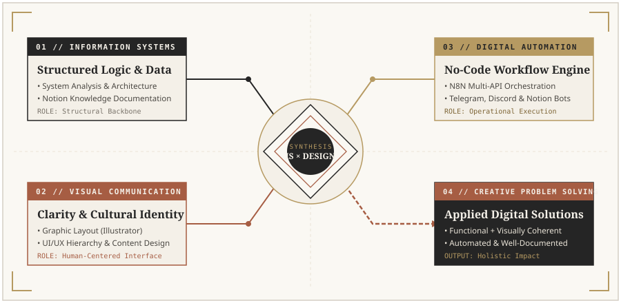

From Information Systems to Creative Digital Solutions
How structured Information Systems thinking, Visual Communication clarity, and no-code Digital Automation converge to produce practical Creative Problem Solving.


Information Systems
Provides the analytical backbone: organizing unstructured data, analyzing system requirements, mapping workflows, and structuring documentation in Notion before any visual or automated tool is built.
Visual Communication
Translates complex system logic into human-readable clarity: using Adobe Illustrator, typographic hierarchy, UI/UX layout structure, and local cultural aesthetics so information is intuitive and engaging.
Digital Automation
Powers operational efficiency: using N8N no-code workflows to connect APIs (Telegram, Discord, Notion, Instagram Graph), eliminating repetitive manual tasks and running 24/7 bot triggers.
Creative Problem Solving
The synthesis of all three pillars: crafting digital solutions—like Gretiva Bot, Discord Voice Break Reminders, and Educational Visual Carousels—that are logically structured, visually clear, and automated.